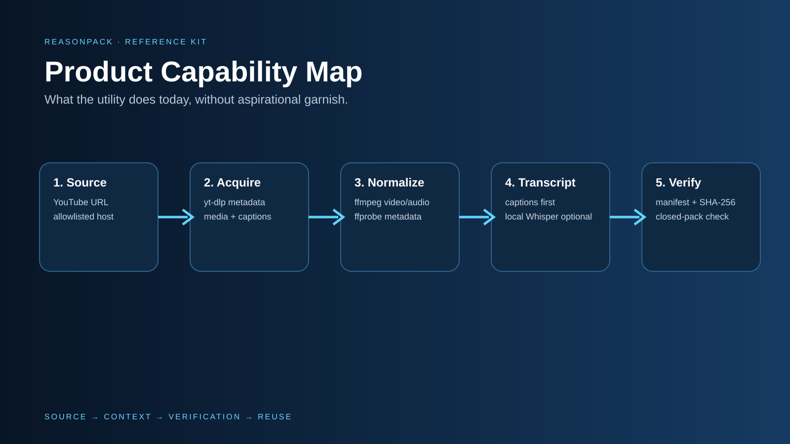
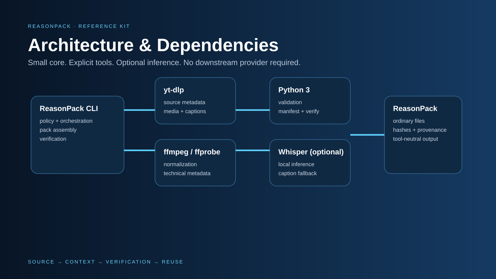
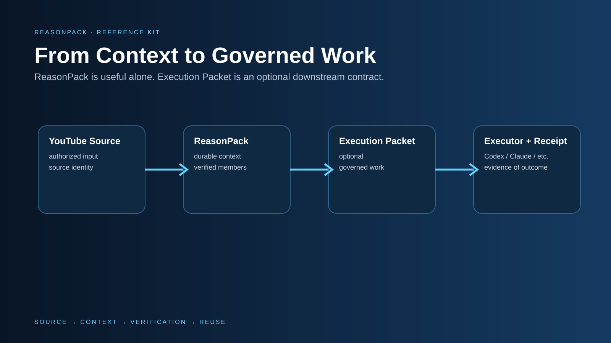
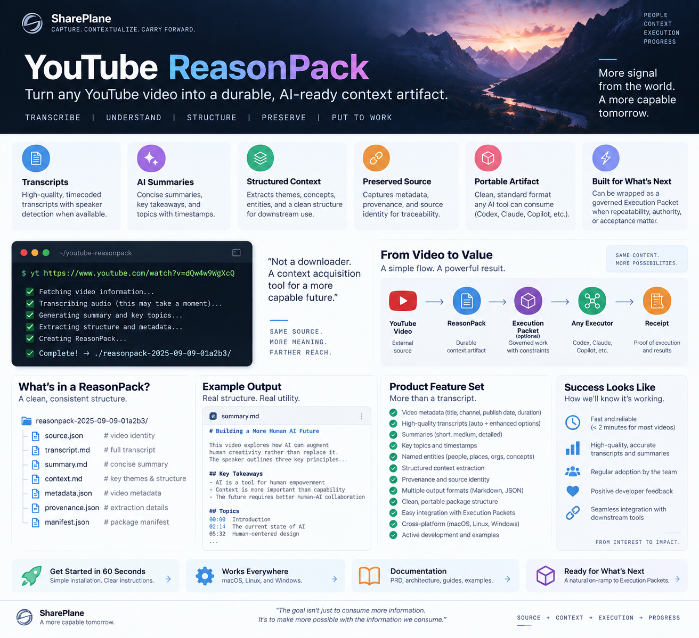

Turn one authorized YouTube source into a durable, locally verifiable context artifact that can move between humans and AI tools.
Acquire. Normalize. Transcribe. Inventory. Verify. No imaginary feature inflation.

Useful without SharePlane, Codex, Claude, Copilot, GitHub, Drive, or any cloud API key.

A recipient can understand it, install it, verify it, challenge it, and extend it without reconstructing the author's intent from chat history.
Run the OS bootstrap.
reasonpack doctor
reasonpack self-test
yt URL
macOS ./install/install-macos.sh Linux ./install/install-linux.sh Windows .\install\install-windows-wsl.ps1
100% fixture verification. Zero accepted hash drift or silent transcript success.
A technical user reaches first pack without author intervention.
macOS/Linux automation, Windows via WSL, ordinary-file outputs.
The strategic move is not “download videos.” It is turning useful external information into durable context that survives the session, model, and provider.


Vision poster, not feature contract. CURRENT/NEXT/NOT YET in the docs is authoritative.
Open the complete offline documentation reader →
The quick path stays quick. The deeper reasoning is there when a product owner, operator, architect, security reviewer, or maintainer needs it.
PRD · Feature contract · Vision · Roadmap
Problem, users, numbered requirements, non-goals, risks, strategic direction and earned next steps.
Architecture · Package contract · Decisions
Components, trust boundaries, data contracts, failure semantics, extension points and the rationale behind non-obvious choices.
Installation · User guide · Troubleshooting
What installers change, OS-specific paths, normal workflows, failure triage, removal, support payload and recovery guidance.
What good looks like · Success metrics
Explicit quality bar plus proposed measures that distinguish real evidence from dashboard theater.
Security / rights · Support matrix · Dependencies
Rights, privacy, trust semantics, OS/runtime claims, dependency ownership and enterprise rollout considerations.
Developer guide · Execution Packet bridge · Documentation map
Development invariants, adapter boundaries, downstream governed-work composition and reader-oriented navigation.
Architecture, PRD, feature contract, vision, success measures, dependencies, installers, user guide, troubleshooting, rights, roadmap, diagrams, synthetic example, manifest, checksums. Because “here's a script, good luck” is not a handoff.